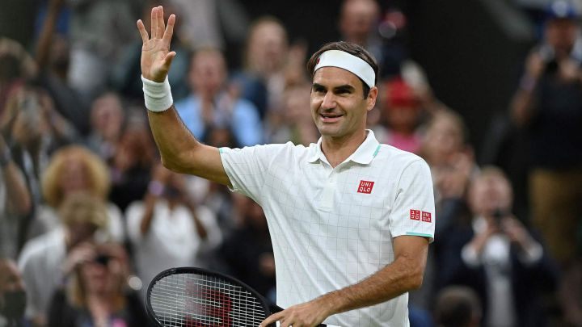
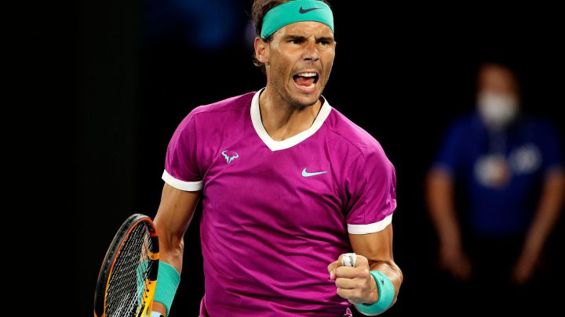
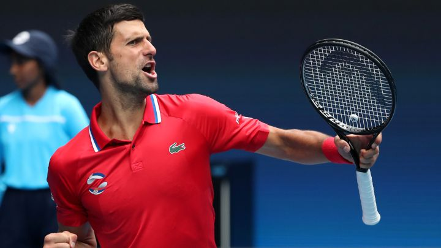
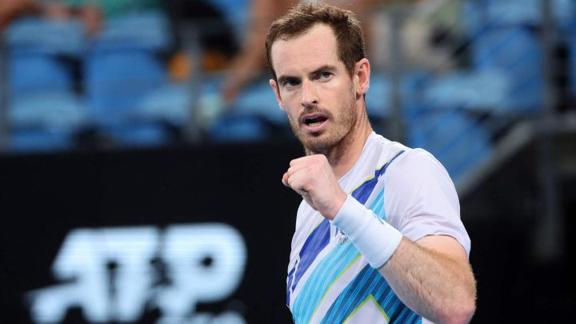
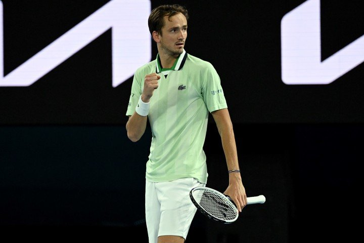

Dominaron y siguen siendo noticia. Llevaron más de 15 años seguidos en el Top 2 del ranking mundial de la ATP dominado en forma absoluta entre Roger Federer, Rafael Nadal, Novak Djokovic y Andy Murray. Sí, sólo ellos ocuparon los dos primeros puestos de la clasificación del tenis en este período. Este dominio de Federer, Nadal, Djokovic y Murray en el Top 2 es único desde que la ATP creó el listado, en agosto de 1973.
Ha ganado 20 títulos individuales masculinos de Grand Slam. Federer ha sido el número 1 del mundo en el ranking ATP por 310 semanas -incluido un récord de 237 semanas consecutivas- y ha terminado el año como el número 1 en cinco ocasiones. Federer ha ganado 103 títulos individuales de ATP, el segundo máximo ganador histórico, solo por detrás de Jimmy Connors, incluyendo un récord de seis títulos del Torneos de Maestros.
Está considerado como el mejor tenista de toda la historia en pistas de tierra batida y uno de los mejores de todos los tiempos. Hasta la fecha, es el tenista con mayor número de títulos de Grand Slam en individuales, con 21, por delante del suizo Roger Federer y del serbio Novak Djokovic, ambos con 20.
Ganador de 20 torneos de Grand Slam, cifra que lo ubica en el segundo lugar de máximos ganadores (junto con Roger Federer) y por detrás de Rafael Nadal (21 títulos). Además de contar con 5 Títulos del Torneos de Maestros, es el máximo ganador de torneos ATP Masters 1000 con 37 triunfos. Actualmente, ocupa el Número 1 en el Ranking ATP individual y es el poseedor del récord de más semanas como Número 1 del Ranking ATP con un total de 346. El serbio registra una cifra histórica de puntos ATP de 16.950 logrado en la temporada 2016 que es récord nunca antes visto en la historia del tenis.
En noviembre de 2016 llegó a la cima del Ranking ATP , y se mantuvo en ese puesto durante 41 semanas, encontrándose así en el puesto 14 de la tabla histórica de cantidad de semanas totales acumuladas de los 26 jugadores que lograron dicha hazaña. Es uno de los cuatro tenistas más exitosos del último decenio, junto con Roger Federer, Rafael Nadal y Novak Djokovic. Ha finalizado ocho temporadas consecutivas entre los cuatro mejores del ranking. Durante una rueda de prensa de presentación del Abierto de Australia edición 2019, el tenista anunció su retiro debido a una lesión de cadera por la cual se había sometido a una intervención quirúrgica, pero de la cual no logró recuperarse del todo.
Es histórico, Daniil Medvedev se convirtió oficialmente en el nuevo N°2 del mundo, el primero no siendo Roger Federer, Rafael Nadal, Novak Djokovic o Andy Murray en llegar al Top 2 del ranking ATP desde el 25 de julio de 2005. Marcando un hecho sin precedentes en más de 15 años y siete meses, cuando sólo el 'Big 4' había estado en los dos primeros lugares del ranking ATP.